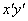
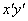
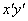
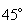
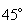
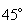

П 9 № 4
Установить, какую линию определяет уравнение .
РЕШЕНИЕ
Перенесем начало координат в такую точку  , чтобы уравнение не содержало
, чтобы уравнение не содержало  и
и  в
первой степени.
в
первой степени.
, чтобы уравнение не содержало и в
первой степени.Это соответствует преобразованию координат вида:
Подстановка в исходное уравнение дает
Или
Положим , .
Решение полученной системы уравнений: и
.
Таким образом, координаты нового начала координат , а уравнение принимает вид .
Повернем оси координат на такой угол  ,
чтобы исчез член .
,
чтобы исчез член .
,
чтобы исчез член .Подвергнем последнее уравнение преобразованию (см. п.4.2):
и получим
Полагая , имеем .
Следовательно, .
Возьмем ,
После соответствующих вычислений получаем
Итак,
уравнение эллипса с полуосями
в дважды штрихованной системе координат, получаемой из
исходной параллельным переносом осей координат в точку  и
последующим поворотом на угол  против часовой
стрелки.
и
последующим поворотом на угол  против часовой
стрелки.
и
последующим поворотом на угол  против часовой
стрелки.Уравнение приведено к
каноническому виду